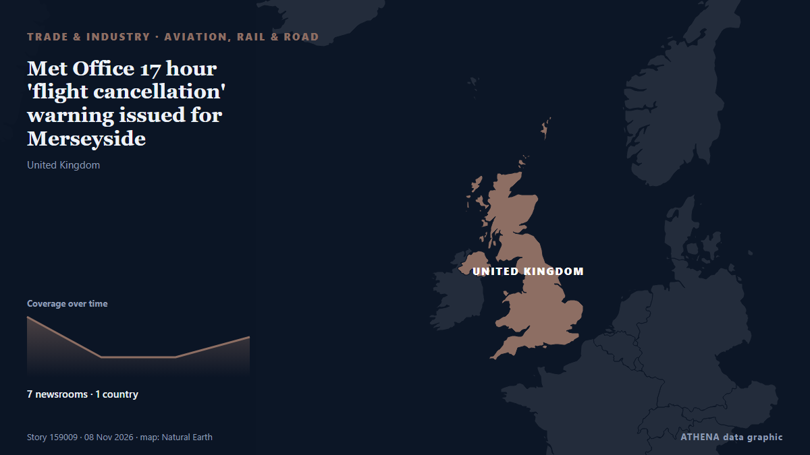

Aviation, rail & road
SponsoredPresented by  Cybernetics and Artificial Intelligence Lab Welcome to the Cybernetics and Artificial Intelligence Laboratory, established at the Department of Business Administration of the National and Kapodistrian University of Athens. The lab is headed by Professor Dimitrios Thomakos. The lab aims to do research that can be published in top venues. Our research uses tools and methods of Artificial Intelligence, and lies in the following areas: - Forecasting - Decision making - Cyber security - Finance We are always looking forward to collaborating with exceptional students!
Cybernetics and Artificial Intelligence Lab Welcome to the Cybernetics and Artificial Intelligence Laboratory, established at the Department of Business Administration of the National and Kapodistrian University of Athens. The lab is headed by Professor Dimitrios Thomakos. The lab aims to do research that can be published in top venues. Our research uses tools and methods of Artificial Intelligence, and lies in the following areas: - Forecasting - Decision making - Cyber security - Finance We are always looking forward to collaborating with exceptional students!
| 26 Oct | 0 |
|---|---|
| 27 Oct | 0 |
| 28 Oct | 0 |
| 29 Oct | 0 |
| 30 Oct | 0 |
| 31 Oct | 0 |
| 1 Nov | 0 |
| 2 Nov | 0 |
| 3 Nov | 1 |
| 4 Nov | 1 |
| 5 Nov | 11 |
| 6 Nov | 9 |
| 7 Nov | 1 |
| 8 Nov | 1 |

Met Office 17 hour 'flight cancellation' warning issued for Merseyside
Disruption is expected to travel across road, rail and flights. from Liverpool Echo
Qatar Airways launches first Gulf flights to Venezuela and Colombia
New Doha routes to Caracas and Bogotá expand the airline’s Americas network to 17 destinations. from News of Bahrain
Hoax or bomb threats? What we know about flight disruptions across Europe
Security inspections reveal no explosives as fighter jets escort planes amid Europe's major wave of bomb threats. from Al Jazeera English
Europe bomb hoaxes spread to media, more flights hit
No group has taken responsibility yet. But recent hybrid warfare attacks have the continent concerned. from Foreign Policy
US FAA to eliminate floppy disks from air traffic control by 2028
The US federal Aviation Administration (FAA) is finally moving to retire floppy disks from its air traffic control infrastructure, with plans to to replace four decades-old information systems across… from Tom's Hardware
Rabindranath Tagore's mural defaced in Bangladesh
Dhaka: A mural of Nobel laureate Rabindranath Tagore has been defaced with black ink by unidentified persons in Bangladesh's Khulna, drawing criticism, local media reported on Saturday. from Deccan Herald
US Mission to UAE warns Americans of increased threat of attacks across Middle East
Abu Dhabi: The United States has urged Americans across the Middle East to exercise heightened vigilance, warning of an increased threat of armed attacks by Yemen's Iran-backed Houthi group and… from Gulf News
Bomb threats disrupt European airports: 25 flights diverted in a single day
Anonymous tip-off about explosives on Ryanair planes from Lisbon and Dublin prompted fighter jet escort; similar false alerts reported across Europe on Tuesday. from Wanted in Rome (working feed)
Singapore Airlines to splash $1.6 billion on luxury long-haul cabins as rivals up their game
SINGAPORE: Singapore Airlines, long a benchmark for premium travel, is spending more than S$2 billion ($1.6 billion) to upgrade long-haul seats and provide larger double-bed suites to compete with… from Business Recorder
European Air Traffic Targeted by New Threats in at Least 3 Incidents
Officials across Europe report more bomb threats against flights, following a series of hoaxes causing diversions this week. from ABC News (International)
After America's midterms, the clock is ticking for Israel to bridge its political divides
NATIONAL AFFAIRS: As hostility grows on the American Left and Right, prolonged coalition negotiations and the prospect of another election carry a strategic cost. from The Jerusalem Post
Ride-sharing app Bolt to launch taxi service for Bucharest’s Otopeni Airport
European ride-sharing app Bolt announced the launch of the Bolt Taxi service in Romania on Thursday, November 5. from Romania Insider
Email containing threats against flights signed by Russian extremist cell
(ANSA) - ROME, 05 NOV - An email containing bomb threats against six Italian flights out of 18 in Europe Thursday was signed by a Russian extremist cell. from ANSA English
Aer Lingus passenger's 'teary' moment as Dublin to Rome flight diverted by bomb threat
Dublin-Rome flight diverted to France over bomb threat: French government. from Gulf News
Ukraine to resume medical air evacuation flights by year-end, PM says
The government has approved regulations governing the flights, which will be used to transport patients, medical personnel, donor organs and equipment between hospitals, as well as to take patients… from Kyiv Independent
Hacked freezers, bomb threats on flights: Russia ramping up hybrid warfare, experts say
This week, European countries have faced acts of sabotage on several fronts, ranging from. from NL Times
Fighter jet escorts, flight diversions: What we know about Europe’s wave of hoax bomb threats
No clear pattern has emerged among the airlines and airports targeted, although a significant number of the affected flights either departed or were bound for Italy. from CNA (Channel NewsAsia)
Qantas to raise airfares, cut flights as fuel costs rise by $1 billion
The airline is hiking airfares and making deeper cuts to domestic flights early next year to tackle rising fuel prices. from The Age
2027: Keyamo faults opposition over ‘rig and die’ claim
Minister of Aviation and Aerospace Development, Festus Keyamo, SAN, has sarcastically challenged opposition politicians to show the number of people they killed during elections to substantiate… from Vanguard